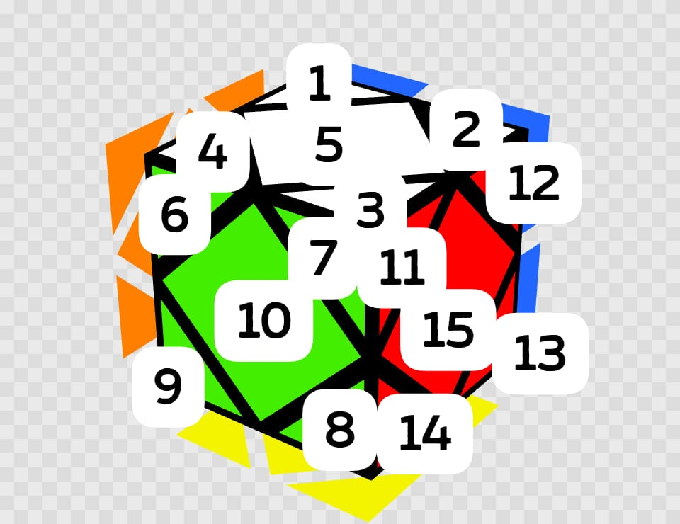
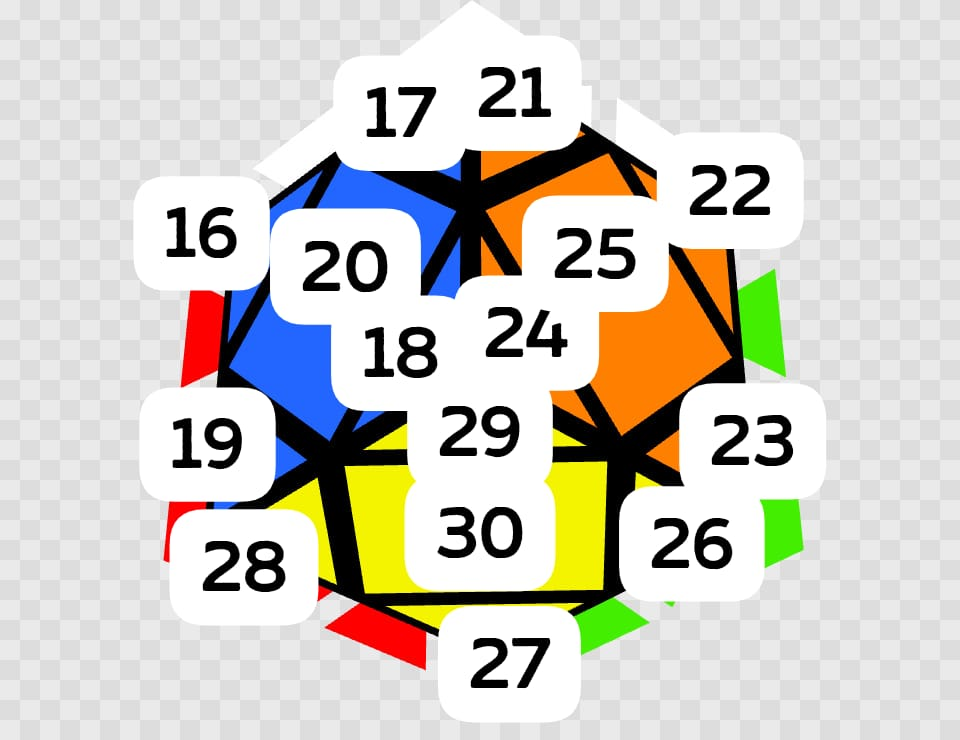
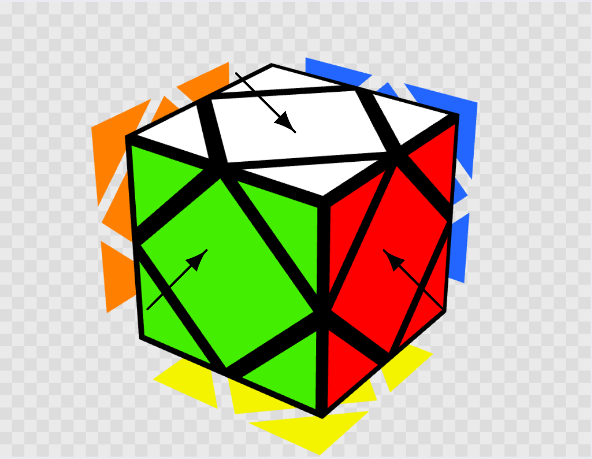
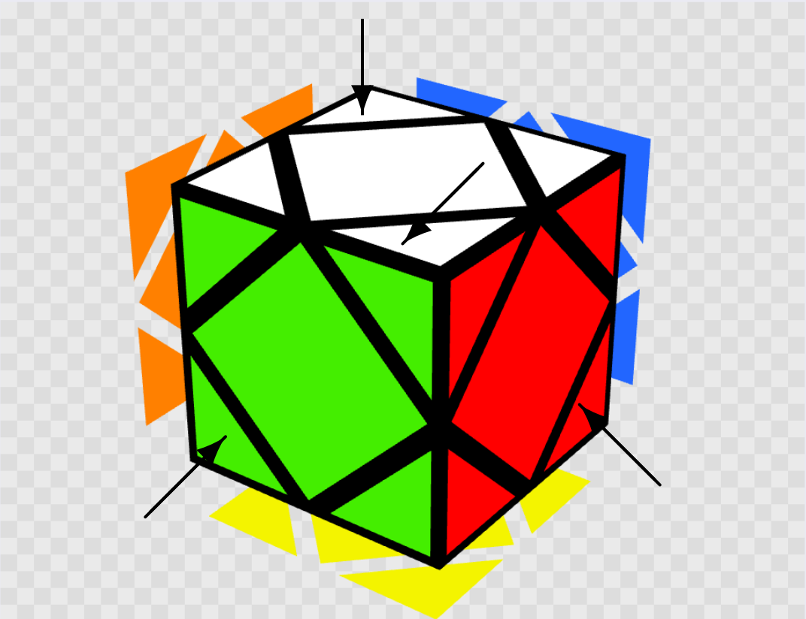
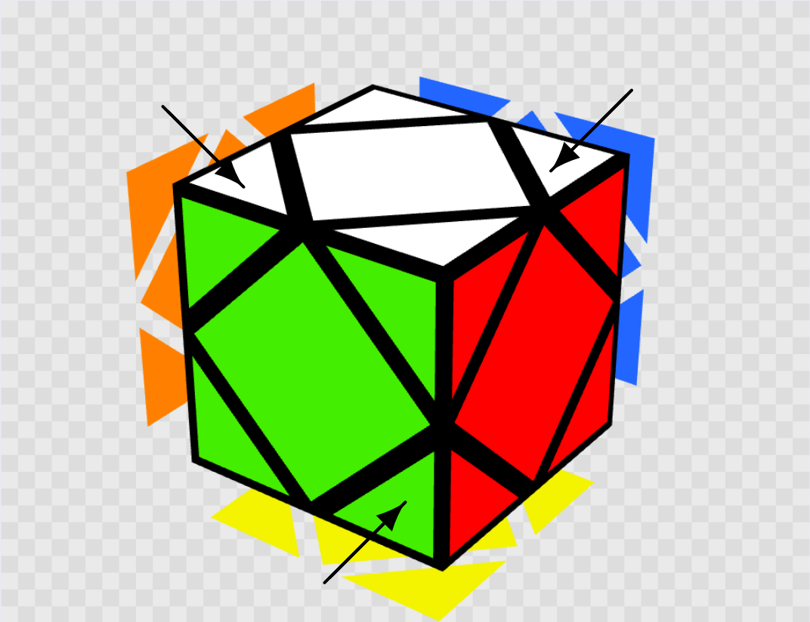

Skewb Solver (Monte Carlo)
4061 Project B report
Content
- About the project
- Getting Started
i. Installation
ii. Preparation - Usage
- More Customisation
- How this Programme Works
i. Understanding Mechanism of the Skewb
ii. Defining the State of the Skewb
iii. Defining Turns
iv. God's Number
v. Monte Carlo
vi. Colour Recognition
vii. Inputting Colour with Python Script - Finding Fewest Moves Solution
i. Finding Fewest Moves Solution for Carter - Future Works
- Reference
1. About the Project
This programme allows user to capture all sides of the skewb, and solve it with the algorithm found by using Monte Carlo.
2. Getting Started
2. i. Installation
To be able to run the python programme, you need to have numpy, Pillow and OpenCV installed.
-
numpy
Copy to clipboard
pip install numpy -
Pillow
pip install pillow -
OpenCV
pip install opencv-python
2. ii. Preparation
Please put all the files and folders in the same directory.
The colour input is done by python opencv, and the skewb algorithm finder is done in C++ using Monte Carlo. Therefore, you need to first compile the C++ programme.
- Compile the C++ script
g++ skewb_solution_finder.cpp -o a
Then, after you scanned the cube using the python programme, it will run the compiled file.
This programme requires you to connect a webcam to the computer,
-
Change the webcam number in the code in line 8 of skewb_solver.py if necessary.
cap = cv2.VideoCapture(0) -
If you are using a linux system, change the code as following.
cap = cv2.VideoCapture(0, cv2.CAP_V4L2)
3. Usage
The main code is in skewb_solver.py. Run this python script and scan each face of the skewb. When you scan the skewb, you have to first find the white-green-red corner and place it at bottom right with white facing up. Press enter to capture a face, then follow the animation in the OpenCV preview window to rotate the cube to scan the next face. Should you have any difficulty scanning the cube, you could take a look at the demo video.
After scanning all faces, the python programme will return the skewb algorithm. The skewb algorithm follows the WCA standard notation. Please refer to quick guide to WCA skewb notation video.
Or, you could just click the link in the terminal under the skewb algorithm for the animation of showing the algorithm as shown in the demo video.
4. More Customisation
Let's say you are right handed, you might want an algorithm that contain less lefty moves. You could actually tune the ratio of the probability of the type of turns that come up in Monte Carlo simulation.
- Tune the numbers in line 8 of skewb_solution_finder.cpp. The numbers in array mean the probability of R showing up to L to U to B respectively.
int ratio[4] = {1, 1, 1, 1}; - If you change the array to {3, 1, 1, 1}, R moves will come up 3 times more frequently than L, U and B moves.
5. How this Programme Works
In the skewb_solution_finder.cpp, I defined the state of the skewb using 3 arrays (will be explained later). When you compiled and run this script, you need to find the white-green-red corner (I will also explain why later), and place in front, with white on top as shown below, then input the colours one by one in the order shown below (note that if you use run skewb_solver.py and scan the cube, it will automatically input the colours for you).
- Input w for white, g for green, r for red, b for blue, o for orange, y for yellow.
| Front | Back |
|---|---|
|  |  |
Then there is a function that converts the colours to the 3 arrays that define the skewb's state.
5. i. Understanding Mechanism of the Skewb
| Centres | Attached corners | Floating corners |
|---|---|---|
|  |  |  |
As shown in the figures, centre is the center piece with only one colour. Corner on the other hand contains 3 colours, and they are categorised into 2, attached corners, and floating corners. When you disassemble the cube, you will find that the attached corners are connected to the core piece, and their relative positions cannot change. Floating corners of the other hand, do not connect to the core, they can move around.
5. ii. Defining the State of the Skewb
Now that you understand the basic mechanism of a skewb, we can now try to understand how to define the state of a skewb.
In fact, there are only 8 different kinds of individual turns of a skewb needed to attain any state of the skewb. In other words, only 8 different kinds of turns are needed to solve a skewb of any state. You could refer to quick guide to WCA skewb notation video to learn the 8 different moves used in this programme.
Coincidentally, if you put white-green-red corner in front with white facing up as shown in the video, all the 8 turns will not affect this white-green-red corner. We can conveniently use this corner as anchor as our "virtual cube" (which means the programme will be based on the white-green-red corner in front, with white facing top).
The first array is called centres[6], this defines the position of centres. The integers are mapped to different centres as shown below.
- 0 --> white centre
- 1 --> green centre
- 2 --> red centre
- 3 --> blue centre
- 4 --> orange centre
- 5 --> yellow centre
First entry of the array stores the position that white centre should be at when solved, second entry stores the position that green centre should be at when solved, and so on. When the centres are solved, the array should be {0, 1, 2, 3, 4, 5}.
The second array is called corners_p[7], this defines the permutation of the corners. The integers are mapped to different corners as shown below.
- 0 --> white-orange-blue corner
- 1 --> white-red-blue corner
- 2 --> white-green-orange corner
- 3 --> yellow-green-red corner
- 4 --> yellow-red-blue corner
- 5 --> yellow-blue-orange corner
- 6 --> yellow-green-orange corner
First entry of the array stores the position that white-orange-blue corner should be at when solved, second entry stores the position that white-red-blue corner should be at when solved, and so on. When the permutation of corners are solved, the array should be {0, 1, 2, 3, 4, 5, 6}.
The third array is called corners_o[7], this defines the orientation of the corners. Each corner must have either white or yellow colour, when the white or yellow colour faces up or down, the entry is 0, when it faces right-front or left-back, the input is 1, when it faces left-front or right-back, the input is 2. The first entry stores the orientation of white-orange-blue corner (0 corner), the second entry stores the orientation of white-red-blue corner (1 corner), and so on. When the orientation of corners are solved, the array should be {0, 0, 0, 0, 0, 0, 0}.
5. iii. Defining Turns
There are 8 different turns, namely R, R', L, L', U, U', B and B'. There are 8 functions, one for each turn. Each functions will apply necessary changes to the 3 arrays to do the turn to the "virtual cube".
5. iv. God's Number
God's number is the maximum number of turns needed to solve any state of a cube. For skewb, the God's number is 11.
5. v. Monte Carlo
This programme will then do random moves to the skewb and check whether it is solved after each moves. If solution is not found after doing 12 moves (one more move than God's number), it will search for another algorithm. The programme will avoid applying duplicated moves, such as R after R or R'. The Monte Carlo simulation will be based on the ratio set in line 8 of the code, and the probability of generating clockwise and counterclockwise turn are the same.
5. vi. Colour Recognition
The colour recognition is done by python opencv. For colours other than white, I allowed a range of hue and saturation shift from my defined colours.
def get_limits(colour): #... lower_limit = hsvC[0][0][0] - 10, 100, 100 upper_limit = hsvC[0][0][0] + 10, 255, 255 #... return lower_limit, upper_limit
In the above function, the -10 and +10 refers to hue shift, while 100 and 255 refers to minimum and maximum saturation respectively.
For white colour, it's not that meaningful to define hue shift. Therefore, I hard coded the lower and upper limit of white colour.
lower_white, upper_white = np.array([0, 0, 150], dtype=np.uint8), np.array([179, 55, 255], dtype=np.uint8)
5. vii. Inputting Colour With Python Script
process = subprocess.Popen(['./a'], stdin=subprocess.PIPE, stdout=subprocess.PIPE, stderr=subprocess.PIPE, text=True) output, error = process.communicate(input=input_string) if error: print(error) else: print(output)
At the end of skewb_solver.py, it will run the ./a compiled from skewb_solution_finder.cpp, then it will input the colour of each side, capture and display the output from the C++ programme.
6. Finding Fewest Moves Solution
I added a for loop to the skewb_solution_finder.cpp to search for solution for 100 times, and return the solution with the fewest move count (saved to fewest_move_finder.cpp).
6. i. Finding Fewest Moves Solution for Carter
Then I tried to find the moves needed to solve the 5 scrambles of Carter Kucala's final round at Going Fast in Grandview 2024 using this programme. The reason I chose this average was because the last solve was the world record single, but he did not perform that well in other solves. The table below shows the time, scramble, number of moves found by my programme.
| Solve | Result | Scramble (11 moves) | Fewest number of moves |
|---|---|---|---|
| 1 | 2.49 | R B L’ U’ L’ R B’ R’ B R B | 9 |
| 2 | 1.77 | U L U’ B’ U’ B’ U’ L B U’ R’ | 9 |
| 3 | 3.32 | U L B U’ B’ L’ B R’ B’ L U | 7 |
| 4 | 4.65 | R B’ U’ B U B L’ U B’ U R | 8 |
| 5 | 0.75 | B L R’ B’ L U B’ R U’ R U | 8 |
For the last solve, he did find the 8 moves solution. However, he did not find the 7 moves solution for the third solve. This shows that the current method that the top solvers are using (NS algorithm) is unable to attain the fewest moves solution.
It's also worth noting that the third fastest solve was done by Simon Kellum in this same competition, solving that same scramble! This shows that luck really play a role in skewb solves.
7. Future Works
The code could be generalised for 3x3 cubes, or even other puzzels, this could be made into a programme that solves different Rubik's cubes.
Also, the colour recognition is not very robust. In low light conditions, or when the webcam quality is not good enough, the programme might fail to recognise the colour. The colour detection method in python could be improved.
8. Reference
External library used:
- numpy
- Pillow
- OpenCV
- Matplotlib
Website used to animate algorithms: https://alpha.twizzle.net/edit/?puzzle=skewb
Github page of the website: https://github.com/cubing/alg.cubing.net